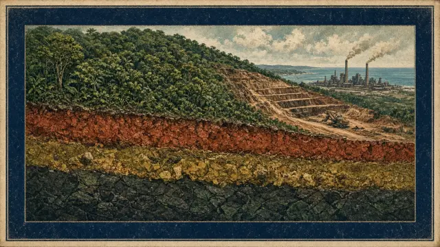


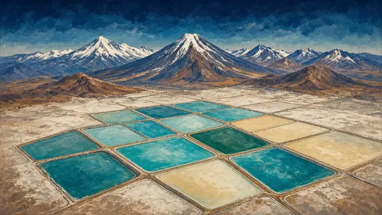
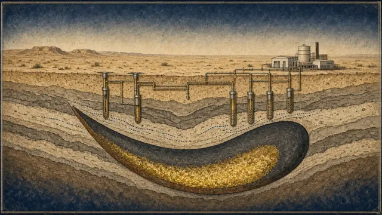


Grades and tonnages below are rounded, typical ranges for economic deposits unverified. Individual deposits vary widely.
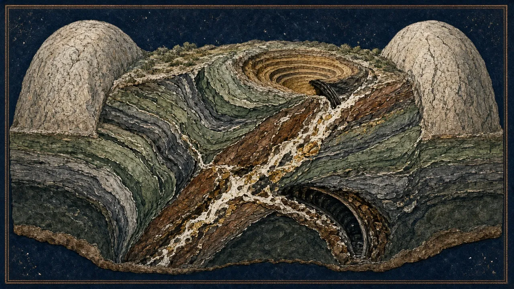
Orogenic gold
Gold is deposited from metamorphic fluids along faults and shear zones during mountain-building. Orebodies are veins and lodes, often steep and narrow, but they can be stacked into large systems. Continuity is the key risk: grade can be erratic (nugget effect) and lodes pinch and swell.
Questions to ask
- Is the intercept a narrow vein (true width!) or a broad stockwork?
- Is there a top-cut and screen-fire data for coarse gold?
- Does the underground grade justify mining costs at depth?
Illustration (AI-generated, schematic, not a specific mine)

Porphyry copper-gold
Huge, low-grade shells of disseminated copper and gold around porphyritic intrusions. They supply most of the world's copper. Scale is everything: they need billions of dollars of capex, long lead times and stable jurisdictions.
Questions to ask
- Is the tonnage potential large enough to justify mega-capex?
- What is the gold credit (it can make or break economics)?
- Is there a supergene blanket or oxide cap for early cash flow?
Illustration (AI-generated, schematic, not a specific mine)
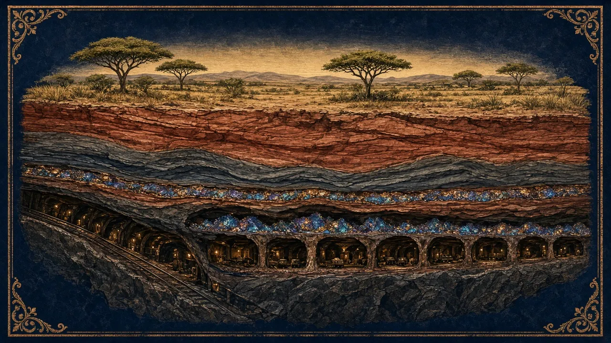
Sediment-hosted copper
Copper precipitates where oxidised basin brines meet reduced, often organic-rich, sediments. The Central African Copperbelt hosts some of the highest-grade large copper mines on Earth, including Kamoa-Kakula (normal feed ≈4.9–5.1% Cu).
Questions to ask
- Is the deposit flat-lying and laterally continuous (good for mining)?
- What are the cobalt credits and the DRC fiscal terms?
- Water, seismicity and geotechnical risk at depth (Kakula 2025)?
Illustration (AI-generated, schematic, not a specific mine)
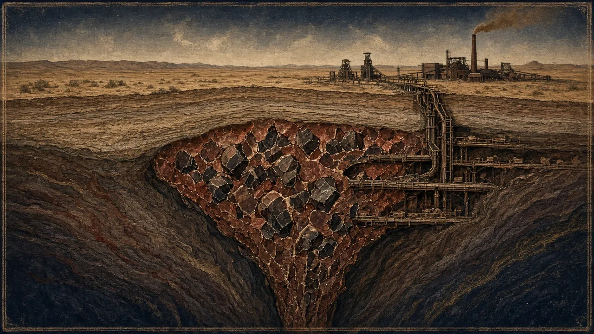
Iron oxide copper-gold (IOCG)
Large, breccia-hosted copper-gold systems with abundant magnetite or hematite. That makes them visible to gravity and magnetic surveys even under deep cover. Olympic Dam is also one of the world's largest uranium resources.
Questions to ask
- Gravity and magnetic anomalies are not ore: what do the drill holes say?
- Depth of cover (Olympic Dam is beneath ~300 m of sediments)?
- By-product value (U, Ag, Au) and its processing complexity?
Illustration (AI-generated, schematic, not a specific mine)
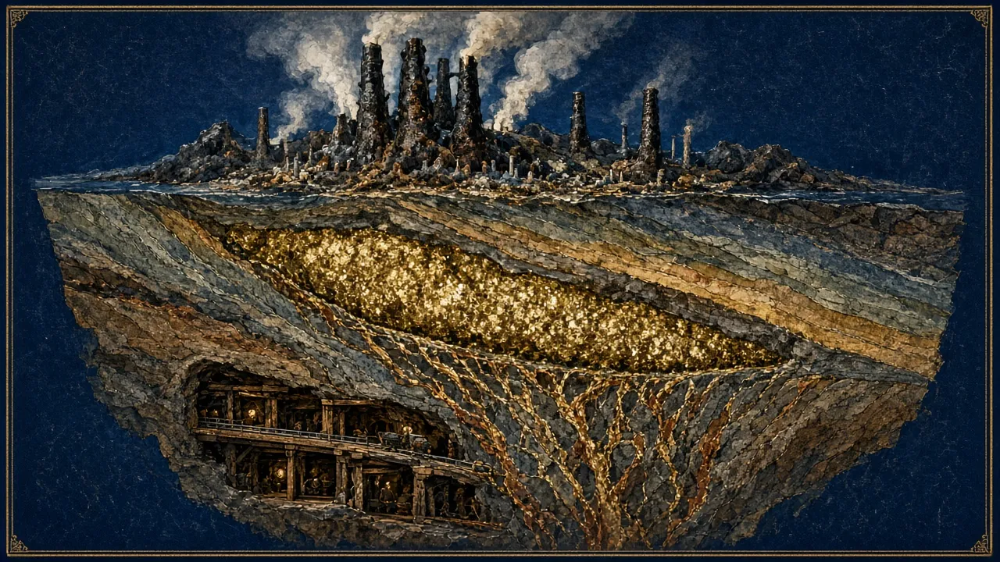
Volcanogenic massive sulphide (VMS)
Lens-shaped bodies of massive sulphide formed at black-smoker vents on the ancient seafloor. They are high-grade and polymetallic, but usually modest in size. They form in clusters, so one find often leads to more nearby. Electromagnetic surveys detect them well.
Questions to ask
- Is the EM conductor actually sulphide ore (not graphite)?
- Multiple concentrates: what are the payables and penalties (Zn 8-unit minimum, As)?
- Is there a cluster for a hub-and-spoke operation?
Illustration (AI-generated, schematic, not a specific mine)
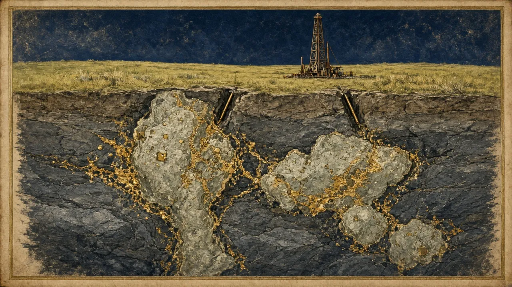
Intrusion-hosted gold (Hemi-type)
Gold hosted within and around intrusions, here Archaean diorite and quartz-diorite. At Hemi it is sulphide-associated, partly refractory and locally shear-controlled. It is not a textbook intrusion-related gold system (IRGS). Large, shallow tonnage supports a bulk open pit.
Questions to ask
- Is it sulphide or free-milling? What recovery by domain?
- Is the grade enough for bulk mining at a conservative price?
- Is cover masking extensions (it hid Hemi for decades)?
Illustration (AI-generated, schematic, not a specific mine)
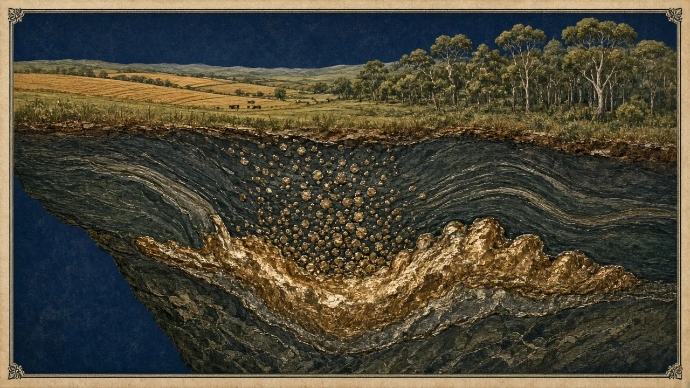
Magmatic Ni-Cu-PGE sulphides
Sulphide liquid separates from mafic or ultramafic magma and concentrates nickel, copper and PGEs. High-grade massive-sulphide zones are prized. Disseminated zones are large but low-grade, and their value often relies on PGE credits (Gonneville: 0.58% NiEq, only ~0.16% Ni).
Questions to ask
- What share of the value is nickel versus PGEs and copper?
- Massive versus disseminated sulphide: grade and continuity?
- How exposed is it to the Indonesian-driven nickel price?
Illustration (AI-generated, schematic, not a specific mine)
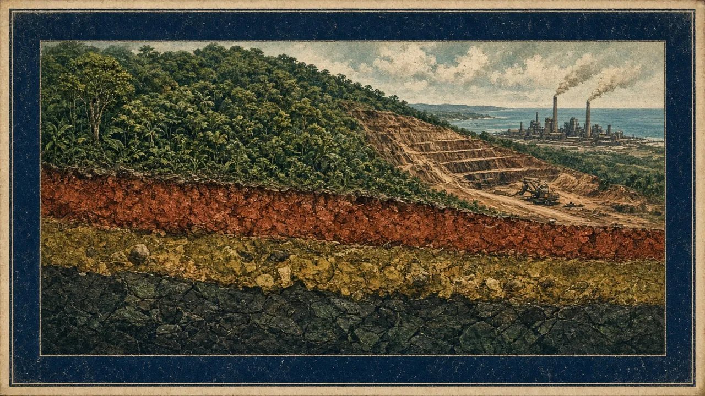
Nickel laterites
Weathering leaches and re-concentrates nickel into near-surface layers. The upper limonite zone suits high-pressure acid leaching (HPAL). The lower saprolite suits smelting via a rotary kiln electric furnace (RKEF). Indonesia's laterite boom transformed the global nickel market after 2020.
Questions to ask
- Which processing route, and its ramp-up record (HPAL is notoriously hard)?
- Cost-curve position against Indonesian NPI?
- Acid, power and tailings logistics?
Illustration (AI-generated, schematic, not a specific mine)
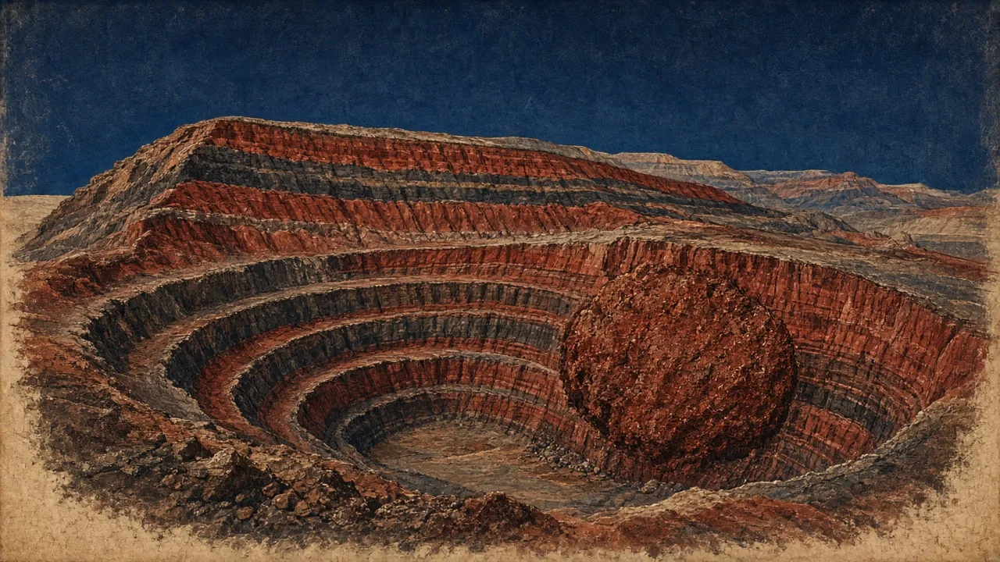
Banded iron formation (BIF) iron ore
Ancient iron-rich chemical sediments enriched by supergene processes into high-grade hematite. Low-grade magnetite needs beneficiation (grinding and magnetic separation) and lots of power and water. Iron ore is mainly a logistics business: rail and port capacity decide everything.
Questions to ask
- DSO or magnetite (very different capex and opex)?
- Impurities (silica, alumina, phosphorus) and price discounts?
- Is rail and port access secured (Simandou needed 600+ km of new rail)?
Illustration (AI-generated, schematic, not a specific mine)
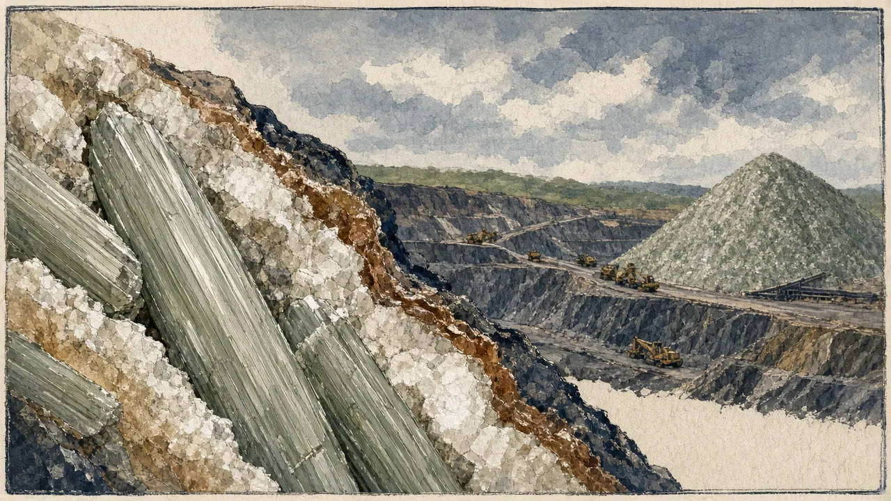
Spodumene pegmatites (hard-rock lithium)
Coarse-grained granitic dykes rich in spodumene. WA dominates world hard-rock lithium supply. Concentrate is sold to converters (mostly in China) on SC6-normalised pricing.
Questions to ask
- Grade basis of quoted prices (SC6 vs SC5.x, CIF vs FOB)?
- Iron and mica contamination; recovery to concentrate?
- Cost-curve position through the cycle (2023–25 bust)?
Illustration (AI-generated, schematic, not a specific mine)
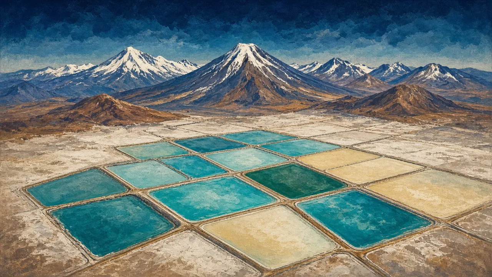
Lithium brines and clays
Lithium-bearing brines are pumped and evaporated over 12–24 months, or processed by direct lithium extraction (DLE). DLE has a poor record of reaching commercial scale. Clays need novel leaching.
Questions to ask
- Proven process or DLE pilot only?
- Water rights, community and provincial royalties?
- Study versus reality: the Lake Resources Kachi reset (2023)
Illustration (AI-generated, schematic, not a specific mine)
Uranium (unconformity, ISR sandstone, calcrete)
Three very different styles. Unconformity deposits, such as Patterson Lake South (Triple R), which is basement-hosted and unconformity-related, are ultra-high-grade. ISR sandstone roll-fronts (Kazakhstan, Honeymoon) are low-grade but cheap. Calcretes (Langer Heinrich) are shallow and low-grade.
Questions to ask
- Which style, and which mining method?
- Term-contract book versus spot exposure?
- Permitting and social licence for uranium?
Illustration (AI-generated, schematic, not a specific mine)
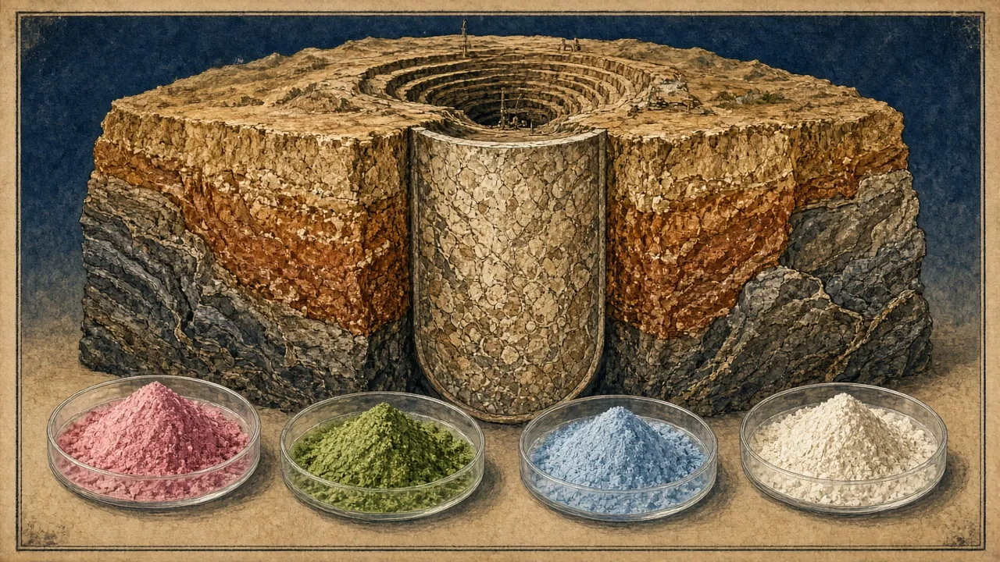
Rare earths (carbonatite, ionic clay)
The value lies in magnet rare earths (NdPr, Dy, Tb) and in the ability to separate them. Lynas's Mt Weld is a carbonatite with a lateritic enrichment cap. China dominates separation.
Questions to ask
- Basket value: what share of value is NdPr and heavy REE?
- Who will separate the product, and where?
- Radioactive by-products (thorium) and permitting?
Illustration (AI-generated, schematic, not a specific mine)
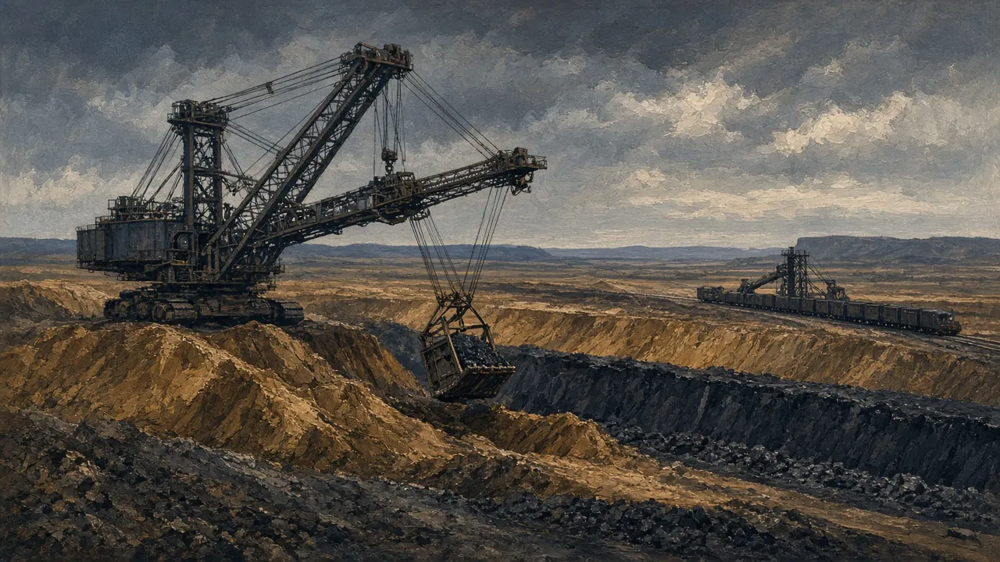
Coal (metallurgical and thermal)
Coal is a sedimentary fuel, not an ore. Products are hard coking coal (steelmaking, the premium product), semi-soft and PCI (metallurgical), and thermal coal (power). Whitehaven's Blackwater and Daunia acquisition (up to US$4.1bn, completed 2 Apr 2024) shifted it towards metallurgical coal.
Questions to ask
- Met or thermal, and which quality specs?
- Strip ratio and yield after washing?
- Royalty regime (Queensland's tiered coal royalties) and ESG financing constraints?
Illustration (AI-generated, schematic, not a specific mine)